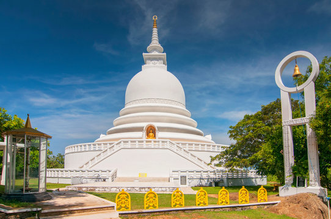

Roomassala

Roomassala is a picturesque hill located near the coastal city of Galle in Sri Lanka. This tranquil and scenic location
is shrouded in legends and offers breathtaking panoramic views of the surrounding landscapes.
The situation of Roomassala, overlooking the Indian Ocean, presents a mesmerizing vista for visitors. The hill is covered with lush greenery, consisting of a variety of tropical plants and exotic species. It provides a peaceful retreat for those seeking solitude and a connection with nature.
Roomassala is steeped in mythology and folklore. According to the Ramayana, an ancient Indian epic, the hill is believed to be a fragment of the Himalayas carried by the monkey god Hanuman during a battle. This adds to the allure of Roomassala, attracting spiritual seekers and those interested in exploring the mystical side of Sri Lanka's cultural heritage.
Apart from its mythological significance, Roomassala offers various outdoor activities for visitors. The hill is a popular hiking destination, with trails leading to its summit, where panoramic views await. The surrounding coastal area is known for its pristine beaches, making it an ideal spot for swimming, sunbathing, and exploring the underwater world through snorkeling or diving.
The value of Roomassala lies in its natural beauty and the sense of tranquility it offers. The hill's elevated position provides a refreshing escape from the bustling city life, allowing visitors to immerse themselves in the serenity of nature. The diverse flora and fauna found in the area add to its ecological importance, making it an attractive destination for nature lovers and conservation enthusiasts.
In conclusion, Roomassala is a hidden gem near Galle that combines natural beauty, cultural significance, and outdoor adventure. Whether it's hiking to the summit for breathtaking views, exploring the surrounding beaches, or simply enjoying the tranquility of the hill, Roomassala offers a memorable experience for those seeking solace in nature and a deeper connection with Sri Lanka's rich heritage.
The situation of Roomassala, overlooking the Indian Ocean, presents a mesmerizing vista for visitors. The hill is covered with lush greenery, consisting of a variety of tropical plants and exotic species. It provides a peaceful retreat for those seeking solitude and a connection with nature.
Roomassala is steeped in mythology and folklore. According to the Ramayana, an ancient Indian epic, the hill is believed to be a fragment of the Himalayas carried by the monkey god Hanuman during a battle. This adds to the allure of Roomassala, attracting spiritual seekers and those interested in exploring the mystical side of Sri Lanka's cultural heritage.
Apart from its mythological significance, Roomassala offers various outdoor activities for visitors. The hill is a popular hiking destination, with trails leading to its summit, where panoramic views await. The surrounding coastal area is known for its pristine beaches, making it an ideal spot for swimming, sunbathing, and exploring the underwater world through snorkeling or diving.
The value of Roomassala lies in its natural beauty and the sense of tranquility it offers. The hill's elevated position provides a refreshing escape from the bustling city life, allowing visitors to immerse themselves in the serenity of nature. The diverse flora and fauna found in the area add to its ecological importance, making it an attractive destination for nature lovers and conservation enthusiasts.
In conclusion, Roomassala is a hidden gem near Galle that combines natural beauty, cultural significance, and outdoor adventure. Whether it's hiking to the summit for breathtaking views, exploring the surrounding beaches, or simply enjoying the tranquility of the hill, Roomassala offers a memorable experience for those seeking solace in nature and a deeper connection with Sri Lanka's rich heritage.